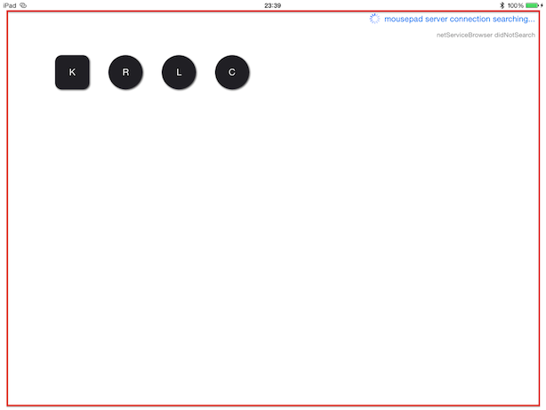

出、出～! BonjourでiOSとMacをつなぐタッチインターフェース奴
概要
iOSをマウスにするアプリケーションで、BTとかで動くマトモな操作性のやつが無かったので作った。
主にZBrushを操作する用。
このへんが原義
http://sassembla.github.io/Public/2014:09:14%2014-40-08/2014:09:14%2014-40-08.html
コードはここ。
https://github.com/sassembla/iMousePadPre
Swift + BTLEマウス化したものは商品にしか入れないことにした。
Appleの審査に落とされるとかしたら、公開すると思う。
気づいてみたら、オープンソースにしてもそれがObj-Cのままだと、いずれ来るSwift化のタイミングで面倒くささが出るんで、
コードをオープンにしてもソンはしないと思った。
今回のこれは商品のコードとは呼べないが。
インターフェースの内容について
マウスが模倣できればよかった。
んで、マウスのボタンは最初、タッチポイントとは別々にするつもりだった。
でもそれだと使いづらくて、考えた結果、
マウスのタッチポイントから相対的な位置を別の指でタッチすると、位置によって右クリックとかを発生させるようにした。
これで、「目で見てないでもタッチインターフェースをマウスのように扱う」ことができる。
こんな感じ。
要は、
画面は目で見えないけど、指の相対的な位置関係は自分の手なのでまあ分かる という。
使いづらさを分解する
最初こういうのだった。
ボタンが4つ、
四角いのはキーボード、丸いのはマウスクリック。
マウスのポインティングはボタン以外を押すことで発生。

でまあボタン位置を下に持っていけば
「左手でボタン」
「右手でマウス移動」
ってできるんだけど、左手の負荷が最悪に高かった。
また、観てないと押せないので、困った。
というわけで現在のUIになったとさ。
動画その2
vimeoの制限のせいで画質最悪だけど、
まあ金払ってない俺が悪いのでそのうち奇麗なやつ上げ直す。
タッチ動作、左クリックと右クリック、ホイル動作も出力できる。
ZBrushをMBAから使うための良いおもちゃができた。ちょっと満足だ。